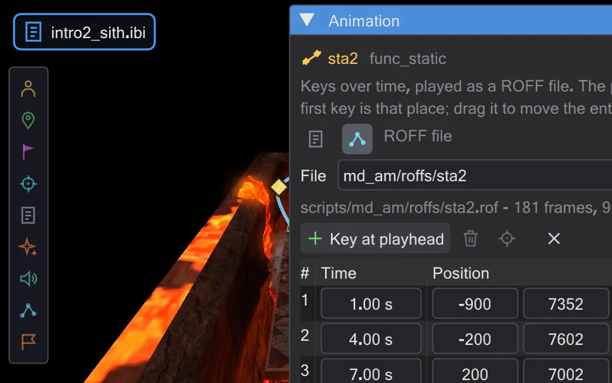
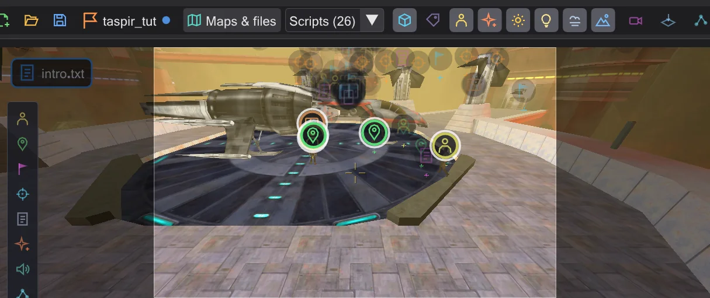

Tutorials
Each tutorial follows one piece of work from the first click to a finished result, with a picture of every step. Choose one by what it makes.

A first cutscene
Two camera shots, a smooth move between them, watched through the camera and compiled for the game.

A figure walks
Place a character and a walk target, let the script send it there, then change the path on the map - walk or run, a point in between.

A ship flies a ROFF path
A free flight with curves for the ship over the arena - built as a ROFF file, turned with the gizmo, saved for the game.

Your own mission
From an empty map to a mission the game loads: create it, add an intro, check it and pack it into a .pk3.
The tutorials use Movie Duels (md_am_sith from MD_Missions_Ep3.pk3) so that the pictures match what you see; any other mission works the same way. If the parts of the window are new to you, read The window and Moving around first.